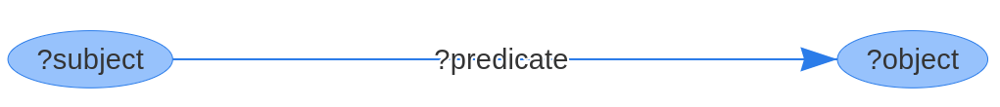

Making a Brick Model
Here we review the construction and Brick representation of a small example building.
Data Model
Brick can be thought of as a vocabulary for describing the things in the building and how they relate to each other.
In Brick, names for things are referred to as tagsets and names for how these things are connected are called relationships.
For example, an instance of a VAV would have a feeds relationship with an HVAC_Zone.
The Brick vocabulary and class structure are available at brickschema.org. The best way to view the file is either using the Protege tool or Python’s rdflib library.
RDF Triples
To use these names to describe a building, we construct tuples consisting following the form of:
subject predicate object
where subject and object are both tagsets and predicate is a relationship. This is known as an RDF triple, which we will abbreviate to “triple”.
Each triple represents 2 nodes (the subject and object) connected with a directed edge (the predicate):

A collection of triples describing a building thus create what we call the “building graph”.
When we write down a subject, predicate or object, we refer to it in terms of its namespace.
The Brick class namespace is http://brickschema.org/ttl/Brick.ttl#, the RDF namespace is https://www.w3.org/1999/02/22-rdf-syntax-ns#, etc.
The concatenation of a subject/predicate/object and its namespace forms a URI.
For example, the VAV Brick class has the URI http://brickschema.org/ttl/Brick.ttl#VAV.
Using prefix declarations, we can define a shortcut for the long namespaces; in Turtle files (described below), a prefix declaration takes the form of
@prefix bf: <http://buildsys.org/ontologies/BrickFrame#> .
This defines the prefix bf to be used instead of the full namespace. We can now write the URI http://brickschema.org/ttl/BrickFrame.ttl#feeds as bf:feeds. These tend to be consistent so as not to cause confusion. Here’s the set of abbreviations used in and by Brick:
| Prefix | Namespace |
|---|---|
bf |
http://brickschema.org/ttl/BrickFrame |
brick |
http://brickschema.org/ttl/Brick |
rdf |
http://www.w3.org/1999/02/22-rdf-syntax-ns |
rdfs |
http://www.w3.org/2000/01/rdf-schema |
owl |
http://www.w3.org/2002/07/owl |
xml |
http://www.w3.org/XML/1998/namespace |
skos |
http://www.w3.org/2004/02/skos/core |
xsd |
http://www.w3.org/2001/XMLSchema |
tag |
http://brickschema.org/ttl/BrickTag |
When forming the set of triples that constitute the Brick representation of a building, we use relationships defined by the Brick vocabulary as well as a few standard relationships, namely the rdf:type (which instantiates Brick classes) and rdfs:subClassOf which allows traversal of the class structure and creation of new subclasses.